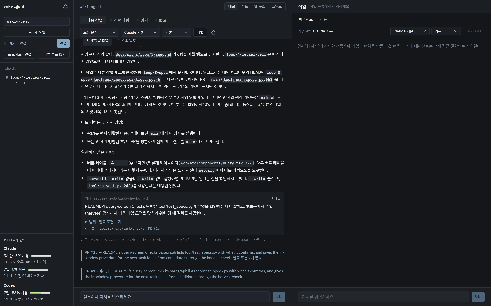

wiki-agent · Claude Code와 Codex 위에서
에이전트한테 같은 말을 또 하고 있다면
AI 코딩 에이전트는 세션이 끝나면 배운 걸 잊어요. 지난주에 바로잡은 실수를 이번 주에 다른 프로젝트에서 또 하죠. wiki-agent는 그 교훈을 규칙으로 적어 두고, 에이전트가 일을 시작하기 전에 맞는 규칙을 먼저 읽게 만드는 도구예요. 여기에 할 일을 정하고, 맡기고, 리뷰받고, 머지하는 과정까지 한 창에서 돌리도록 키웠어요.
이 페이지는 그걸 왜, 어떤 순서로 만들었는지에 대한 이야기예요.
적어 둬도 에이전트는 안 읽었어요
처음엔 흔한 방법을 썼어요. 실수를 바로잡을 때마다 CLAUDE.md나 문서에 “이렇게 하지 마”를 적어 뒀죠. 그런데 같은 실수는 계속 나왔어요. 적어 둔 곳은 있었지만, 에이전트가 그 문장을 필요한 순간에 읽는다는 보장이 없었거든요.
문제는 저장할 곳도, 검색도 아니었어요. 적어 둔 게 행동을 바꾸지 못한다는 거였어요.
그래서 방향을 바꿨어요. 에이전트가 알아서 찾아 읽기를 기대하지 않고, 사람이 말을 거는 순간 그 말에 맞는 규칙을 먼저 끼워 넣기로요.
Claude Code와 Codex에는 훅이라는 장치가 있어요. 세션을 열 때, 말을 보낼 때, 도구를 쓰기 직전에 끼어들어 스크립트를 돌릴 수 있는 자리예요. 여기에 규칙 페이지를 골라 붙이는 스크립트를 걸었어요.
<!-- wiki:rule-index --> Rules loaded this turn, one sentence each. The full pages follow below. - operator/codex-review-loop — Start review only on the person's explicit request; … - operator/english-progress — Tool descriptions, progress reports and chat replies are … - craft/pick-up-async-results — When sending something that will answer back, arm … - craft/verify-narrow-then-wide — During implementation and review repairs, run only … - operator/agent-delegation — Unless the user explicitly asked, never create, call, … - operator/ask-with-arrow-key-options — Where the user's judgement is needed, use …
규칙을 붙이는 것만으로 안 되는 것도 있었어요. 그래서 위험한 명령은 아예 막고, 같은 지시가 반복되면 절차서로 굳히고, 판단이 필요한 것만 글로 남겼어요. 훅이 끼어드는 네 순간과 이 순서는 ① 규칙 훅에 정리했어요.
한국어로 쓰니 에이전트가 둔해졌어요
한동안 위키 페이지, 훅이 붙이는 문장, 에이전트의 진행 보고를 전부 한국어로 썼어요. 읽기는 편했는데 에이전트가 눈에 띄게 덜 정확해졌어요. 훅으로 붙인 규칙에서도, 위키 답변에서도 같은 걸 봤어요.
그래서 둘을 나눴어요. 에이전트가 읽고 쓰는 건 전부 영어로 바꾸고, 그 위에 Gemini 번역을 한 겹 얹었어요. 사람은 한국어로 말하고 한국어로 읽지만, 에이전트에게는 영어로 건너가요.
<!-- wiki:english-rendering --> English rendering of the user's message (Gemini). The Korean above is authoritative — go back to it wherever this reads oddly. Run the review loop for PR #91
번역 키가 없거나 번역이 실패하면 원문이 그대로 나와요. 화면에서 번역을 끄면 번역 요청은 하나도 나가지 않아요.
화면 두 개를 오가다 지쳤어요
그때까지 에이전트는 터미널에서 돌았고, 한국어 번역은 다른 탭에서 봤어요. 번역 화면은 에이전트의 세션 기록 파일을 뒤에서 따라 읽는 방식이라, 기록 경로나 작업트리가 바뀌면 끊겼어요. 두 화면을 계속 오가야 했고요.
그래서 에이전트를 띄우는 쪽과 번역을 보여 주는 쪽을 한 프로그램으로 합쳤어요. 에이전트가 말하는 바로 그 자리에 한국어를 덮으니, 기록을 거꾸로 따라갈 일이 없어졌어요. 그게 지금의 데스크톱 앱이에요.

물어본 것과 맡긴 일이 따로 놀았어요
앱에서 위키에 묻고 일을 맡길 수는 있었지만, 그 사이가 느슨했어요. 일을 넘길 때 질문 하나와 답 하나만 건너가서, 그 뒤 대화에서 바꾼 결정은 사라졌어요. 할 일에는 끝났다고 볼 기준이 없었고, 일이 끝나도 위키로 돌아오는 게 없었어요. 리뷰 루프는 매번 “리뷰 루프 돌려”라고 직접 쳐야 했고요.
그래서 한 바퀴의 단위를 명세 하나로 정했어요. 대화로 목표 · 끝났다고 볼 기준 · 건드리지 않을 것을 정하면, 그 명세가 작업 브랜치, 에이전트 세션, PR, 리뷰 라운드, 결정 기록을 하나로 묶어요.


- 대화로 정하기후보를 고르고, 되묻는 선택지에 답해 명세를 만들어요
- [시작]작업 브랜치를 만들고, 명세를 받은 에이전트가 일해요
- 게이트서버가 검사를 다시 돌려요. 통과해야 PR이 올라가요
- 리뷰 루프다른 모델이 읽기만 하며 리뷰하고, 지적은 다시 고쳐요
- [머지]리뷰가 허용한 바로 그 커밋으로 머지해요
- 결정 기록명세의 결정과 이유가 남아, 다음 세션에 다시 실려요
핵심은 에이전트의 “다 했어요”를 그대로 믿지 않는다는 거예요. 서버가 검사를 다시 돌려 통과해야 PR이 올라가고, 리뷰는 일한 에이전트와 다른 칸에서 해요. 자세한 흐름은 ② 맡기기와 ③ 리뷰에 있어요.
언제 무엇을 부를지가 흐려졌어요
기능이 늘면서 작업 흐름 곳곳에 갈림길이 생겼어요. 일을 바로 시킬지 근거부터 모을지, 리뷰 지적을 바로 고칠지 맥락부터 볼지, 질문에 검색이 필요한지 아닌지. 어떤 분기를 언제 불러야 하는지가 점점 불분명해졌어요.
이 판단을 Jev에게 맡겼어요. Jev는 TypeSafe의 결정 모델이에요. 답을 쓰지 않고, 코드가 미리 내놓은 후보 중에서 고르기만 해요. 처음엔 위키 질문의 검색 판단부터 맡겼어요. 검색할지, 어디서 찾을지, 찾은 게 쓸모 있는지, 그걸로 충분한지요. 다음 날 작업 흐름의 갈림길까지 넓혔어요.
Jev는 고르기만 해요. 무엇을 할 수 있는지는 여전히 코드가 정해요.
Jev가 확신하지 못하거나 실패하면 “아니다”로 처리하지 않고 기본 검색으로 돌아가요. 키가 없으면 꺼져 있고, 키가 있으면 기본으로 판단을 기록만 해요. 실제로 고르게 하려면 설정에서 켜요. 자세한 건 ④ 묻기 · Jev에 있어요.
빨리 쓴 코드가 감당이 안 됐어요
에이전트에게 맡기니 일은 빨리 끝났는데, 코드가 한 번에 리뷰하기 어려울 만큼 커졌어요. 리팩터링을 시작할 때 크기나 중복 기준을 넘은 파일이 60개였고, 그게 더 커지는 걸 막는 장치는 없었어요.
그래서 두 가지를 만들었어요. 하나는 리팩터링 포커스예요. 동작 보존 · 복잡도 정리 · 구조와 성능 중 목적 하나를 고르면, 저장소를 읽기만 하며 조사하고 실행할 명세 카드를 만들어요. 카드는 보통 작업처럼 돌지만, 기존 테스트를 약하게 만들어 통과시키는 걸 막는 약속이 붙어요.
다른 하나는 래칫이에요. 머지 전 검사마다 파일이 기록된 크기보다 커지지 못하게 하고, 새 파일은 800줄을 넘지 못하게 해요. 줄어든 만큼은 기록도 같이 내려가요. 리팩터링 카드를 돌리는 법은 ② 맡기기에 있어요.
그렇게 다섯 갈래가 됐어요
이야기 순서대로 생긴 것들이 지금은 다섯 갈래로 돌아요. 궁금한 것 하나만 골라 읽어도 돼요.
- ①규칙을 먼저 읽히는 훅말에 맞는 규칙을 붙이고, 위험한 명령은 막아요. 앱 없이도 어느 저장소에나 붙어요.읽기 →
- ②할 일을 정하고 맡기기후보 → 되묻기 → 명세 → 작업 브랜치 → 게이트 → PR. 큰 일의 계획 세우기와 리팩터링도 여기서 해요.읽기 →
- ③리뷰를 돌려 머지하기읽기만 하는 리뷰 칸이 라운드마다 읽고, “머지 허용”이 나올 때까지 고쳐요.읽기 →
- ④위키에 묻기와 Jev저장소의 문서 · 결정 · 코드를 근거로 답해요. 검색과 갈림길 판단은 Jev가 맡아요.읽기 →
- ⑤하루를 돌아보고 고치기오늘 어긋난 자리를 세어 규칙 후보로 만들어요. 고친 게 정말 나아졌는지는 재 보고 골라요.읽기 →